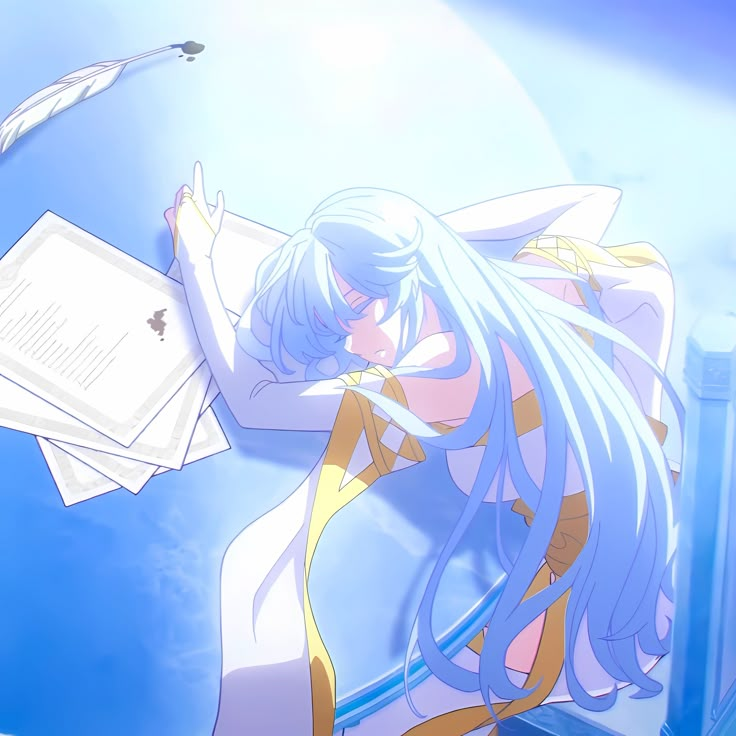
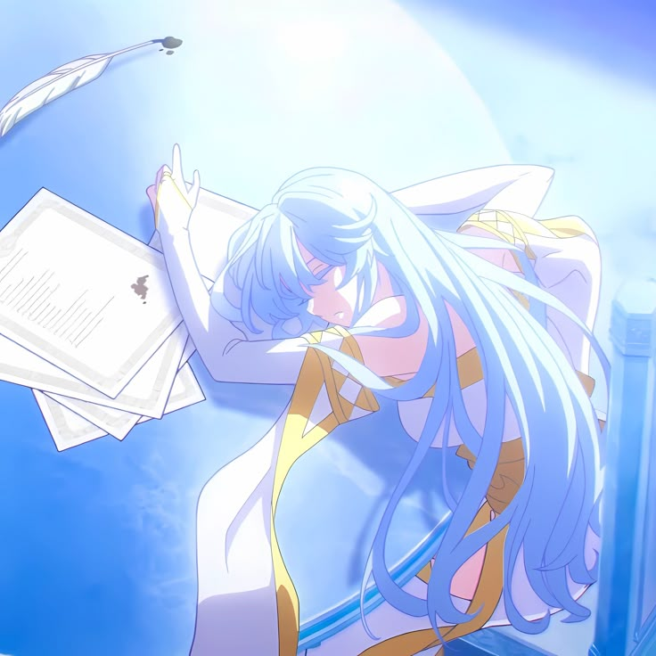

Tentang Elfaria
Elfaria Albis Serfort adalah salah satu penyihir jenius paling berbakat di dunia Wistoria: Wand and Sword. Sejak kecil, ia sudah menunjukkan bakat sihir yang luar biasa, memiliki kontrol mana yang sangat tinggi dibandingkan murid lain seusianya. Di akademi sihir, namanya dikenal sebagai murid elit yang selalu berada di peringkat atas. Ketenangannya saat bertarung dan kemampuannya menganalisis situasi membuatnya terlihat seperti penyihir profesional meski usianya masih muda.
Meskipun memiliki kekuatan besar, Elfaria bukan tipe orang yang sombong. Ia tetap rendah hati dan sangat peduli pada orang-orang terdekatnya, terutama Will Serfort, sahabat masa kecilnya. Hubungan mereka menjadi salah satu bagian emosional penting dalam cerita, karena Elfaria selalu percaya pada potensi Will, bahkan ketika orang lain meragukannya. Dukungan diam-diamnya menjadi motivasi besar bagi Will untuk terus berkembang.
Di balik sikapnya yang tenang dan elegan, Elfaria menyimpan tekad kuat untuk menjadi penyihir yang mampu melindungi orang-orang yang ia sayangi. Ia memahami bahwa kekuatan bukan hanya soal kemampuan menyerang, tetapi juga tentang tanggung jawab. Karena itu, ia terus melatih dirinya agar dapat berdiri di puncak dunia sihir, bukan demi ketenaran, melainkan demi masa depan yang lebih aman bagi semua orang.
Galeri Elfaria
 
